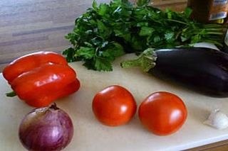
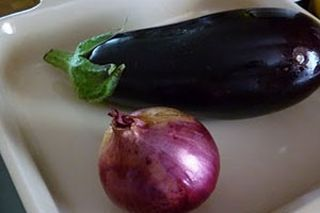
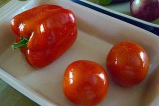
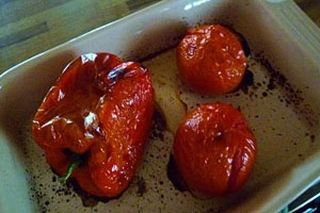
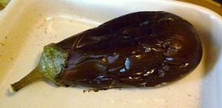
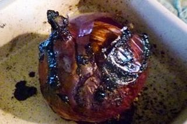
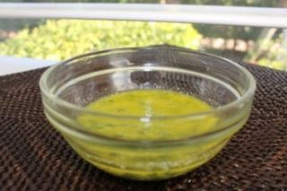
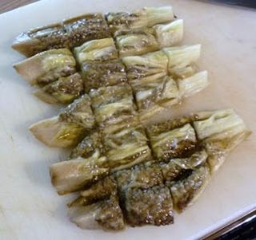
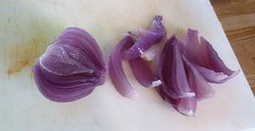
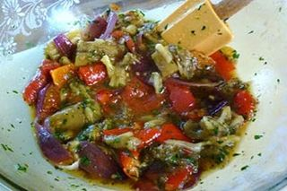

Шаг 1: подготавливаем овощи.

В первую очередь включаем и разогреваем духовку до 200 градусов Цельсия. Затем промываем под холодной проточной водой репчатый красный лук прямо в кожуре, помидор, баклажан, болгарский перец, пучок петрушки и чищенный от кожуры чеснок. Зелень встряхиваем над раковиной от излишков жидкости, кладем на разделочную доску, мелко шинкует при помощи кухонного ножа, и перекладываем нарезку в пиалу вместе с зубчиками чеснока, эти ингредиенты понадобятся позже. Остальные овощи сушим бумажными кухонными полотенцами.
Шаг 2: запекаем овощи.

Теперь берем 2 керамические жаростойкие формы для запекания и вливаем в них по пол стакана обычной проточной воды. В одну из них кладем луковицу с баклажаном, предварительно наколов последний ингредиент вилкой.

А во вторую укладываем томаты и болгарский перец. Проверяем, разогрела ли духовка до нужной температуры и только после этого отправляем в нее формы с овощами. Теперь главное следить за временем, так как эти ингредиенты запекаются по-разному. Лук и баклажан не менее 40 - 45 минут, а помидоры и перец не более 20 – 25 минут. Периодически открываем духовку и при помощи столовой вилки переворачиваем овощи со стороны на сторону, для того чтобы они равномерно пропеклись.

Через 20 – 25 минут удаляем из духового шкафа форму с перцем и томатами, придерживая ее кухонным полотенцем.

Еще через 30 минут проверяем готовность баклажана и лука, вводим в них зубчики вилки, они должны войти в мякоть плавно без препятствий.

Если оставшиеся овощи готовы удаляем форму из духового шкафа, также ставим ее на разделочную доску и даем всем испеченным ингредиентам немного остыть, так чтобы они были не горячими, но при этом не успели охладиться до комнатной температуры.
Шаг 3: готовим заправку.

Пока остывают овощи, готовим заправку для салата. Берем отдельную глубокую миску и вливаем в нее 2 – 3 столовые ложки оливкового масла. Овощи имеют свой сладковатый привкус, поэтому для того чтобы придать блюду более насыщенный, как бы «разноцветный вкус» добавляем к маслу немного легкого столового уксуса и чуточку лимонного сока. Ну, а для того чтобы смесь получилась пряной и не пресной, вводим в нее по вкусу соль, черный молотый перец и душистый молотый перец. И последний, но немало важный штрих, при помощи чеснокодавки выдавливаем в тарелку с почти готовой заправкой зубчики чеснока. Вооружаемся столовой вилкой и слегка взбиваем все ингредиенты до однородности. Затем затягиваем емкость полиэтиленовой пищевой пленкой и оставляем заправку в таком виде настояться при комнатной температуре до полной подготовки овощей.
Шаг 4: доводим блюдо до полной готовности.

После того как овощи слегка остыли, поочередно снимаем с каждого кожуру помогая себе кухонным ножом. Затем также по очереди кладем их на разделочную доску и нарезаем, баклажаны ломтиками длиной до 3 – 4 сантиметров и толщиной до 2 сантиметров, а томаты просто разрезаем на 4 – 6 частей.

У перца удаляем плодоножку, потрошим его от семян и режем широкими полосами толщиной до 2 – 3 сантиметров. Лук нарезаем крупной соломкой толщиной до 1 сантиметра.

Кладем все нарезанные овощи в миску с заправкой, добавляем в нее измельченную зелень петрушки и очень аккуратно перемешиваем все составляющие салата столовой ложкой до однородности. Делаем это так, чтобы ароматная масса обволокла все ингредиенты. После даем салату настояться 5 – 7 минут, затем раскладываем его по тарелкам и подаем к столу.